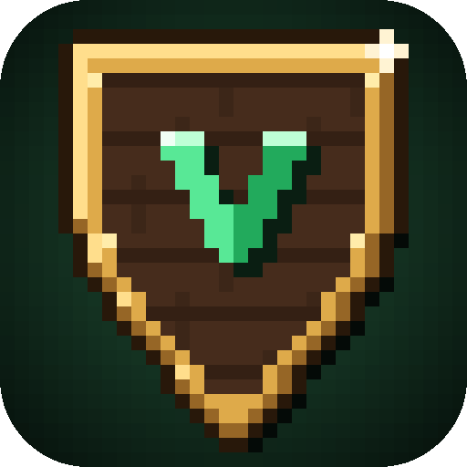

Главный мод
Villagers, Kokk
Жители с планирующим ИИ: основывают поселения, сами строят дома, огороды и рыбачат, торгуют, разговаривают, помнят твои поступки. У каждой деревни — репутация и отношения с соседями.

MineVillagersАвторская сборка Кокка: жители строят поселения, торгуют и помнят тебя, зима приходит по-настоящему, а ночи можно проспать с киношной камерой.
То, что Кокк пишет при каждом обновлении. Подтягивается автоматически.
Всё это написано с нуля для MineVillagers и работает вместе.
Жители с планирующим ИИ: основывают поселения, сами строят дома, огороды и рыбачат, торгуют, разговаривают, помнят твои поступки. У каждой деревни — репутация и отношения с соседями.
Смена времён года: снег на крышах, листопад, зима, к которой жители готовятся заранее.
Настраиваемая длина дня и ночи и ускоренный сон с кинематографичной камерой.
Более сильные и умные мобы — ночь снова становится опасной.
Уровни качества снаряжения: от поношенного до шедевра.
Сундуки, бочки и сундуки-короба разных уровней, рюкзаки и модули улучшений. Жители тоже ими пользуются.
Аккуратный интерфейс с черепом-термометром: видно, когда пора греться.
Скины и плащи из редактора лаунчера видны всем игрокам. Меняются без перезапуска, гардероб — на клавишу K.
Нет. Можно войти через Ely.by или играть с офлайн-ником. Лицензионный аккаунт Microsoft лаунчер пока не поддерживает.
Рекомендуем 16 ГБ оперативной памяти в компьютере; игре лаунчер по умолчанию отдаёт половину (до 8 ГБ). Это меняется в «Настройки → Память».
Лаунчер не подписан платным сертификатом, поэтому SmartScreen может показать предупреждение. Нажми «Подробнее» → «Выполнить в любом случае». Скачивай только по кнопке на этом сайте или со страницы GitHub.
Лаунчер держит папку mods точно как в сборке, чтобы ничего не конфликтовало. Убранные моды лежат в папке игры: .villagers/removed-mods.
Твои правки конфигов сохраняются, пока автор не изменит тот же файл. Если изменил — твоя версия уходит в .villagers/backup, ничего не теряется.
В лаунчере откроется окно с последними строками лога и кнопками «Отчёты о вылетах» и «Логи». Скинь их Кокку. Ещё помогает «Настройки → Проверить папку».
Если хост вошёл через Ely.by, а друг играет с офлайн-ником (или наоборот), в мир по сети не пустит. Играйте все через Ely.by или все с никами.
Нет — сборка ставится и обновляется только через VillagersLauncher, так у всех одинаковые версии модов.
Сборка, моды и лаунчер делаются вручную. Любая поддержка на Boosty помогает выпускать обновления чаще и делать жителей ещё умнее.
Открыть Boosty Оплата проходит на стороне Boosty — этот сайт не видит и не хранит платёжные данные.